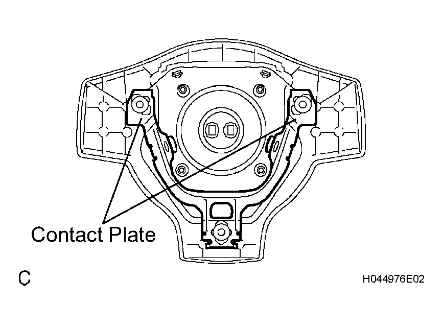

On-Vehicle Inspection (2005/12- )
- CHECK STEERING PAD ASSEMBLY (VEHICLE NOT INVOLVED IN COLLISION AND AIRBAG NOT DEPLOYED)
- Perform a diagnostic system check (see DTC CHECK / CLEAR ).
- With the steering pad (with airbag) installed on the vehicle, perform a visual check:
Check for cuts, cracks or discoloration on the steering pad outer surface and in the grooved portion.
If any of the defects mentioned above are present, replace the steering pad assembly with a new one.
CAUTION: For removal and installation of the steering pad assembly, be sure to follow the correct procedures.
- CHECK STEERING PAD ASSEMBLY (VEHICLE INVOLVED IN COLLISION AND AIRBAG NOT DEPLOYED)
- Perform a diagnostic system check (see DTC CHECK / CLEAR ).
- With the steering pad (with airbag) removed from the vehicle, perform a visual check:
- Check for cuts, cracks or discoloration on the steering pad outer surface and in the grooved portion.
- Check for cuts and cracks in the wire harness, and chipping on the connectors.
- Check for deformation on the steering wheel.
- Check for deformation of the steering pad contact plates.
If any of the defects mentioned above are present, replace the steering pad assembly with a new one.
CAUTION: For removal and installation of the steering pad assembly, be sure to follow the correct procedures.
Courtesy of © TOYOTA, LICENSE AGREEMENT TMS1002HINT:
- If the steering pad contact plates are deformed, never repair them. Always replace the steering pad assembly with a new one.
- There should be no interference between the steering pad and steering wheel, and the clearance should be uniform all the way around when the new steering pad is installed on the steering wheel.